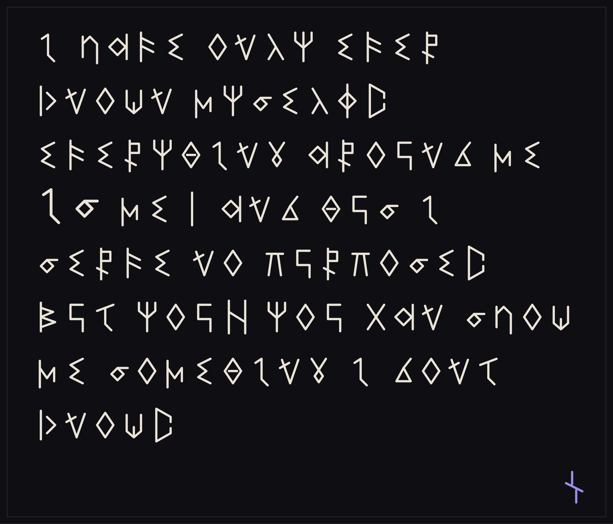
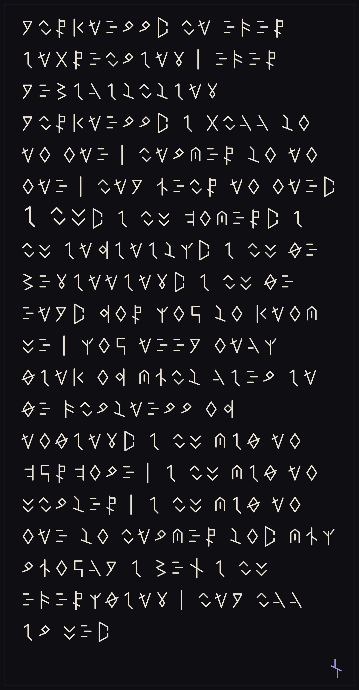

the recovered
what has been pulled out of him so far. read freely — these have already been spoken.

the first message
surface hand · read

the second message
hollow hand · read
audio fragments
the bench
her working reconstruction of his key. it does not agree with the passage.
the order
eleven were taken. she recovered them in the order she stumbled on them, which is not the order they were taken in.
the filing
two boxes. every row goes in one of them.
the index
her working file. numbered in sixes, and incomplete — it was found, not given.
the sealed
these do not open for effort. they open for the right word. speak, and press enter.